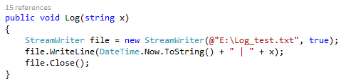

Установка пакета Selenium 2.0 для MSVisual Studio. Написание тест-кейсов на Selenium 2.0
Цель: Рассмотреть инструментарий программного пакета Selenium для автоматизированного тестирования приложений.
Установка
Запустите Visial Studio и создайте новый проект Windows form.
Далее откройте меню “Проект” (project), и выберите пункт«Управление пакетами NuGet» (Manage NuGetPackages), или нажмите правой кнопкой в «Обозревателе объектов» (SolutionExplorer) и в контекстном меню выберите пункт «Управление пакетами NuGet» (Manage NuGetPackages). Должно открыться окно «Менеджера пакетов NuGet».
Убедитесь, что ваш компьютер подключен к сети Интернет. Далее, выберите поиск онлайн, задайте ключевое слово поиска “Selenium”, из выбранного списка выберите для установки Selenium WebDriver и Selenium WebDriver Support Classes. Нажмите кнопку «Установить» (Instal) и дождитесь окончания автоматической установки.

После установки у данных элементов будут стоять «галочки», подтверждающие установку.
Задание 1:
Произведите установку программных пакетов для Selenium
Настройка окружения
После успешной установки пакетов, закройте «Управление пакетами NuGet». Добавьте новые директивы, связанные с Selenium, а также те, которые понадобятся для работы с файлами, для этого допишите, сверху следующий код.
Директивы OpenQA.Selenium и OpenQA.Selenium.Firefox – отвечают за взаимодействие с библиотеками Selenium и браузерами, в данном случае выбран браузер MozillaFirefox.
Директива System.Drawing.Imaging используется для создания снимков окна браузера для создания отчетов по выполнению тестов.
Директива IO используется для записи данных о ходе процесса в лог-файл.
Директивы System.Data и System.Data.OleDb нужны для связи с Excel-файлом и получения из него тестовых наборов данных.
Далее зададим параметры как показано на рисунке.
IWebDriverсоздает новый экземпляр Веб-драйвера – средства управления браузером в Selenium.
baseURL – переменная задающая URL-адрес страницы, с которой будет взаимодействовать тестирующее приложение.
Далее создается счетчик i, который будет указывать имя снимка экрана.
Далее создадим форму нашего приложения.
Для этого перетащить из панели инструментов три кнопки, для формы, а также два элемента Label, для того, чтобы с помощью них указать о начале и завершении тестирования.
Сперва создадим события для вспомогательных кнопок «Открыть лог-файл» и «Открыть директорию со снимками».
Нажмем дважды по кнопке «Открыть лог-файл», после чего автоматически создастся событие для данной кнопки.
В данном случае запускается файл, путь к которому указывается в качестве аргумента. После запуска приложения, при нажатии на кнопку откроется указанный файл, если он был создан.
!!! В качестве пути НЕ может быть выбрана корневая директория диска или иная другая, требующая подтверждения прав администратора.
Задание 2:
По аналогии самостоятельно создайте событие на открытие директории, в которой будут хранится снимки.
Далее двойным нажатием создаем событие для кнопки «Открыть директорию со снимками». После чего копируем следующий код. Стоит отметить, что директорию необходимо создать самостоятельно.
После запуска приложения, при нажатии на кнопку откроется указанная директория, если он был создана.
Далее создадим функцию для создания снимка окна браузера.
Создадим новую функцию ScreenShot.
Зададим строковый аргумент х, который будет являться именем файла, который будет задаваться программистом. Далее переводим изображение в строковую переменную. После чего задается путь и формат для нового файла. В конце происходит увеличение счетчика, для того, чтобы не создавалось нового снимка с именем, которое уже было использовано, так как произойдет замена файла.
В конце происходит увеличение счетчика, для того, чтобы не создавалось нового снимка с именем, которое уже было использовано, иначе произойдет замена файла.
Задание 3:
По аналогии самостоятельно создайте для создания снимка экрана
Создайте функцию для создания новой записи в лог-файл с именем Log.

Создайте новый экземпляр элемента StreamWriter и укажем ему путь к файлу в который будут сохраняться логи. Далее создадим новую строку в документ с указанием текущей даты и времени, для получения более точных сведений, и аргументом, который будет задаваться программистом. В конце экземпляр закрывается, чтобы сохранить изменения в документе.
Задание 4:
По аналогии самостоятельно создайте функцию логирования хода тестирования.
Создание тест-кейса
В функцию Mainпосле инициализации компонентов формы зададим переменную baseURL, которая указывает путь к калькулятору на сайте “google.com”, для получения пути необходимо сделать запрос в браузере, после чего скопировать получившийся результат в код программы.
Далее создадим событие для основной кнопки «Start», после нажатия которой будет выполняться автоматическое тестирование веб-страницы. Сперва в теле события пропишем следующий код.
Сперва, указывается драйвер браузера, который будет использоваться. В данном случае браузер Mozille Firefox. После выполнения этой строки произойдет открытие браузера. Создадим первую запись в лог-файл о том, что у нас открылся браузер. Вызовем созданную функцию Log и в качестве аргумента укажем текст как на рисунке.
Далее вызывается метод Navigate() для перехода на необходимую страницу.
После зададим методы Timeouts() для задания временной задержки между событиями выполняемыми с браузером. И Windows.Maximaze() для открытия окна браузера на весь экран компьютера для лучшего наблюдения за ходом процесса тестирования.
Экземпляр элемента IWebElement нужен для взаимодействия с элементами сайта, которые находятся различными способами. В данном случает найде элемент строки ввода по Id стиля. Чтобы получить id или class name необходимо открыть в браузере «Инспектор DOM и стилей», для этого нажмите правой кнопкой мыши на интересующем элементе, в нашем случае строка ввода, и из ниспадающего списка выберите пункт «Исследовать элемент»
Скопируем необходимый стиль вметод By.Id().
Следующим шагом будет создание и подключение Excel-документа с тестовыми наборами данных. Создадим подключение к документу, в строковой переменной con укажем параметры подключения к файлу. Далее используя метод OleDbConnection подключимся к документу. Создадим новый экземпляр элемента OleDbCommand, в аргументах которого укажем SQL-запрос к таблице. После чего используем объект OleDbDataReader для чтения записей из таблицы. После чего создадим цикл для чтения данных.
На данном этапе создадим документ test.xlsx в директории из которой он будет вызываться согласно строке подключения к документу, который будет содержать тестовые наборы данных. Зададим четыре столбца: первый операнд, действие, второй операнд и результат действия.
Далее выведем первый операнд из документа test.xlsx, для этого найдем элемент строки ввода по id стиля, и используем метод SendKeys(), аргументом которого будет элемент первого столбца dr[0]. После чего добавим соответствующую запись в лог-файл.
Далее необходимо указать знак оператора, для этого создадим условие switсh, которое будет брать из Excel-документа брать оператор, который с помощью метода FindElement() будет находить элемент на сайте соответствующий оператору. Также будет добавляться новая запись в лог-файл.
После оператора switch к элементу searchInputприменяем метод Click(), имитирующий нажатие левой клавиши мыши на данный элемент.
Задание 5:
Самостоятельно добавьте ввод второго операнда после ввода знака оператора.
Перед тем как получить результат вычисления стоит сохранить в лог-файле запись информирующую о том, какие операнды и какое действие между ними будет происходить.

Самостоятельно использую методы FindElement() и Click() найдите кнопку равно на форме и совершите имитацию нажатия на нее. Сохраните полученный результат в лог-файле.
Далее сравниваем полученный результат с эталонным результатом и выводим в лог-файл результат сравнения, если результат не совпадает, значит есть необходимость в создании снимка страницы для более детального отчета.
Задание 5:
Самостоятельно используя
методы FindElement() и Click() найдите
кнопку очищения строки ввода и совершите имитацию нажатия на нее. Сохраните
полученный результат в лог-файле.
В конце тела функции напишем следующий код.
Метод Cloce() закроет браузер после выполнения тестирования. После чего создадим соответствующую запись в лог-файле. А также укажем о завершении работы тестов на основной форме приложения, для того, чтобы было видно, что программа завершила работу. Для этого объекту label зададим параметр Text с текстом о завершении теста. После чего создадим еще одну соответствующую запись в лог-файле.
Далее открыть лог-файл, проверить правильность выполнения тестов. Составить отчет на основе полученных данных, о результатах сообщить преподавателю. К отчету приложить архив с полученными снимками браузера, а также лог-файл.
Контрольное задание
Самостоятельно разработайте тестовые варианты на выполнение операции отрицание и заполните отчет.
Требования к отчету об автоматизированном тестировании
- Указание название и функций тестируемого приложения.
- Приложенный файл в формате xls тестовых вариантов используемых при тестировании.
- Приложенный лог-файл, полученный при тестировании.